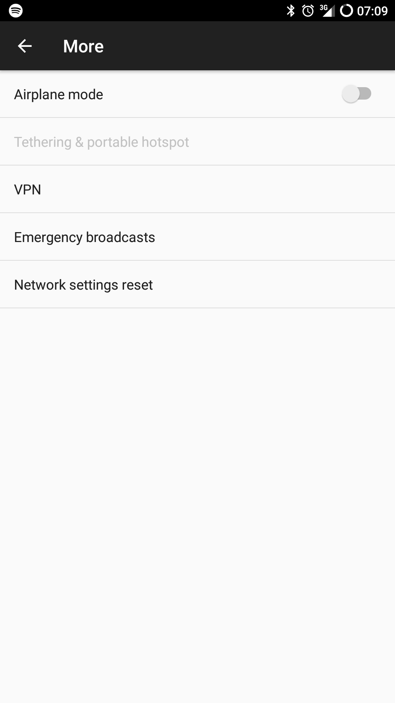
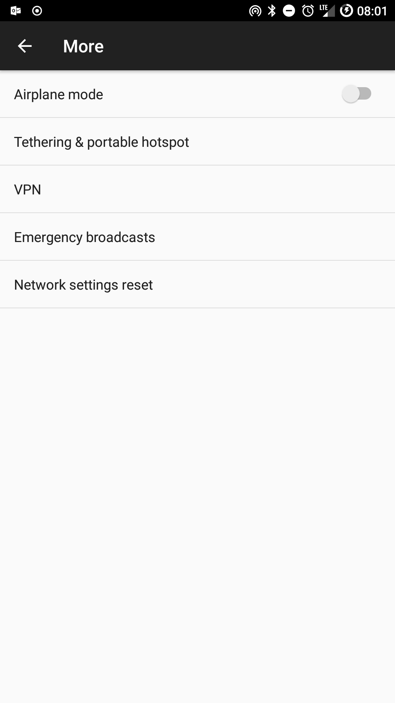

Enable tethering on LineageOS using ADB
Update
After updating to a newer version, I couldn't get the below steps to work any more. Here is some extra stuff to get it to work again. It comes down to build.prop not accepting the changes you make because it's being loaded as read-only. Remounting the filesystem as read-write and then pushing the updated file will do the trick.
Run the following through ADB with root enabled (flash the SuperSU zip found on the lineage OS website and enable root in the developer settings).
// Get the required root access. adb root; // Mount the filesystem as read-write. adb shell mount -o rw,remount /; // Now you can push in the updated build.prop file.
A while back I tried the successor to Cyanomod, LineageOS on my OnePlus2 to see if was any good. I really liked it but there were some things that didn't work and it wasn't very stable yet either so I went back to the stock OxygenOS ROM. This weekend, the itch came back and I gave it another go. I was very happy to see that LineageOS works very well now (the only missing thing is Bluetooth audio track info).
My long commute on Mondays by train lets me get some work done but to be able to access everything I need to be online. Mobile hotspot solves this problem easily and it's what I use when on the train. When I got on the train this morning I found that tethering wasn't available on the ROM I was using!

This was no good if I were to get anything done.
A quick search on my phone led me to a helpful post about editing the build.prop file. This file controls all sorts of things on your phone including the availability of tethering. First thing I needed was the value I had to add to the prop file to get tethering enabled. Turns out the name and value for that are net.tethering.noprovisioning=true.
Easy enough, but now to get that into the build.prop file without rooting (I have no need for root, so why bother).
The Android Debug Bridge (adb) is what you can use to pull and push files from and to the phone so that's the direction I took. After hooking up the phone and enabling USB debugging I took the following steps to update my build.prop file:
adb reboot recovery
This loads the phone into recovery mode (I'm using TWRP).
adb pull /system/build.prop
Downloads the file to my laptop so I can edit it. This is where you add net.tethering.noprovisioning=true to the file.
adb push build.prop /system/build.prop
Upload the file back to the phone.
adb reboot
Reboot back to the main operating system.
Lo and behold! It works again :-)

Just a few easy steps and we are back online.